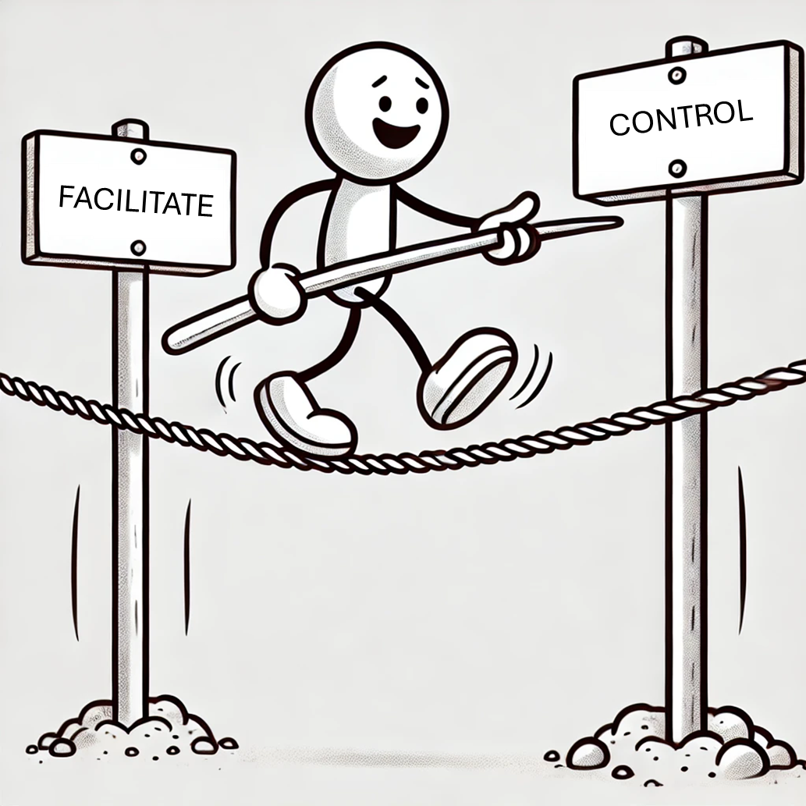

Tightrope of a Tech Lead
balance involvement?
enough direction while allowing the team to grow?
About Me
Ian Tweedie
Senior Technical Consultant at Capgemini
Balancing Involvement

Team Size
Larger teams need more structure
Process loss – Too many people working on the same thing
Pluralistic ignorance – No one speaks up
Diffusion of responsibility – “Someone else will do it”
Other Key Factors
Team relationships
Experience level
Complexity of the solution
Project length
Regulatory constraints
The Bottleneck Problem
Over-reliance on the tech lead
Progress slows down
The team becomes fragile
Breaking the Bottleneck
Grow your way out of it
Push people outside their comfort zones
Shift commitments & introduce new people
Tactical Moves
Identify the second-most knowledgeable person
Make them the go-to person
Rotate responsibilities
Use the driver/instructor model
Encourage Active Thinking
Combat pluralistic ignorance
Ask the quiet ones for input
Show visible support for their ideas
Leadership = Enabling others to decide
The Impact
Balance is essential, not optional
Good people don’t leave bad projects
They leave bad leadership
Final Thought
Create an environment where staying is more rewarding than leaving
Balance control and direction
Walk the tightrope